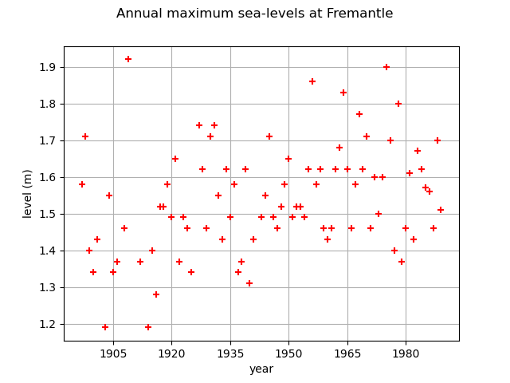
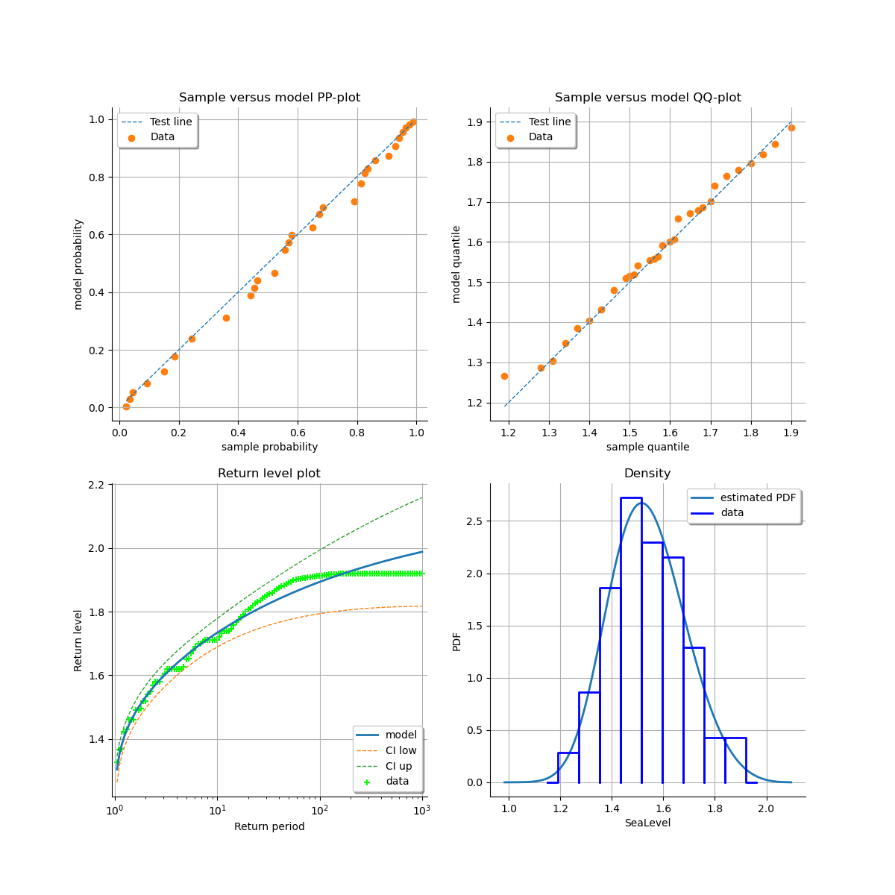
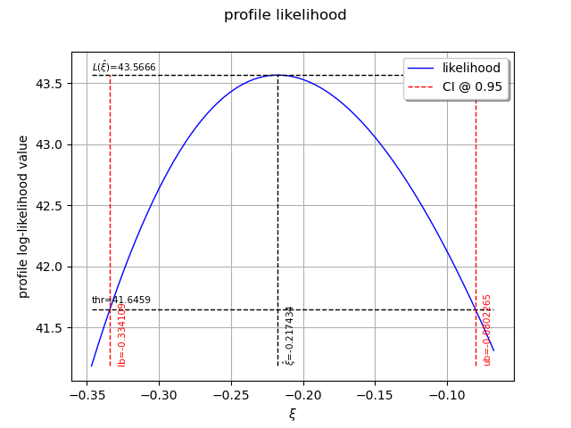
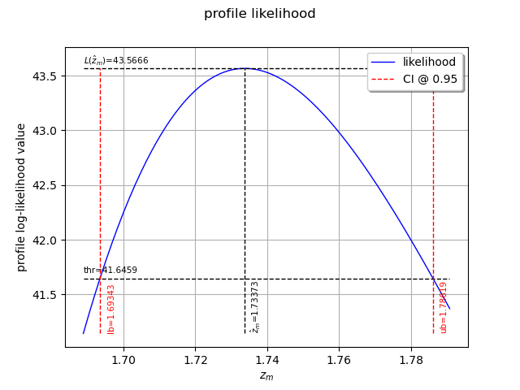
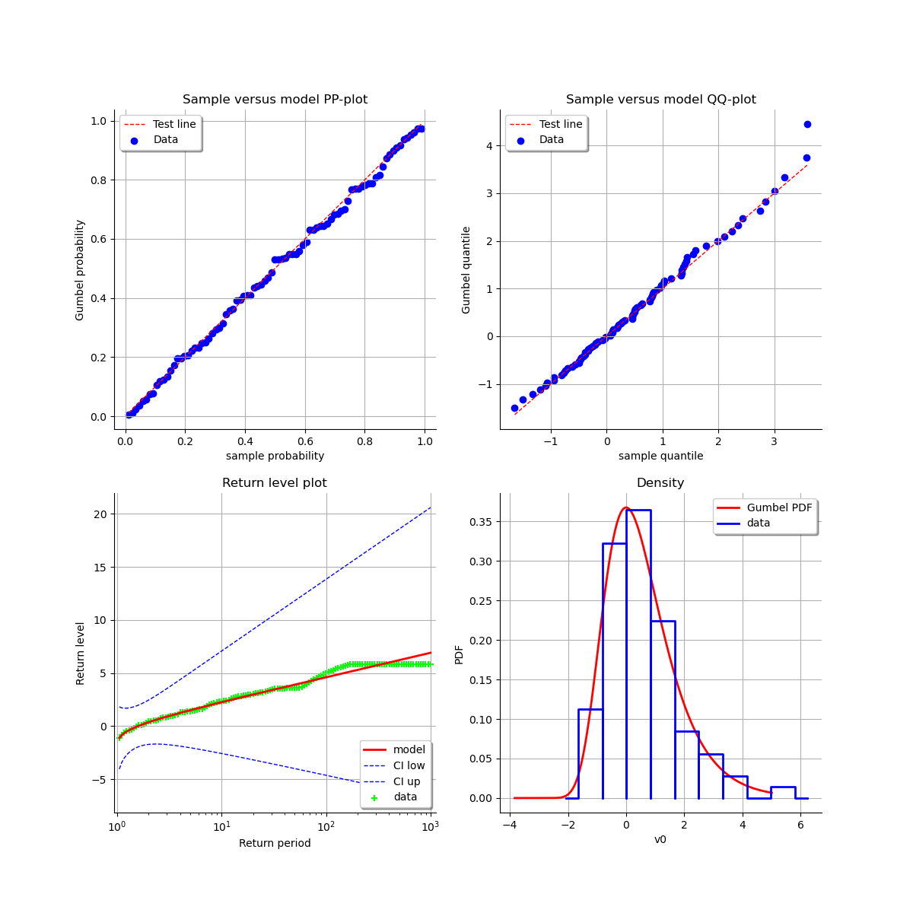
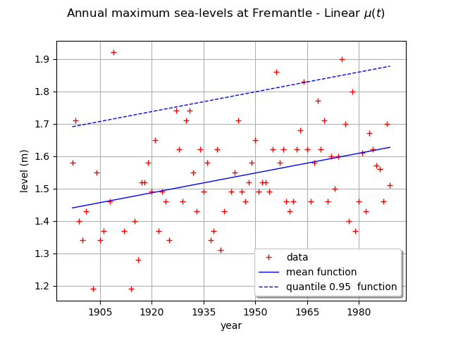

Note
Go to the end to download the full example code
Estimate a GEV on the Fremantle sea-levels data¶
In this example, we illustrate various techniques of extreme value modeling applied to the annual maximum sea-levels recorded at Fremantle, near Perth, western Australia, over the period 1897-1989. Readers should refer to [coles2001] to get more details.
We illustrate techniques to:
estimate a stationary and a non stationary GEV,
estimate a return level,
using:
the log-likelihood function,
the profile log-likelihood function.
First, we load the Fremantle dataset of the annual maximum sea-levels. We start by looking at them through time. The data also contain the annual mean value of the Southern Oscillation Index (SOI), which is a proxy for meteorological volatility due to effects such as El Nino.
import openturns as ot
import openturns.viewer as otv
import openturns.experimental as otexp
from openturns.usecases import coles
data = coles.Coles().fremantle
print(data[:5])
graph = ot.Graph(
"Annual maximum sea-levels at Fremantle", "year", "level (m)", True, ""
)
cloud = ot.Cloud(data[:, :2])
cloud.setColor("red")
graph.add(cloud)
graph.setIntegerXTick(True)
view = otv.View(graph)

[ Year SeaLevel SOI ]
0 : [ 1897 1.58 -0.67 ]
1 : [ 1898 1.71 0.57 ]
2 : [ 1899 1.4 0.16 ]
3 : [ 1900 1.34 -0.65 ]
4 : [ 1901 1.43 0.06 ]
We select the sea-levels column.
sample = data[:, 1]
Stationary GEV modeling via the log-likelihood function
We first assume that the dependence through time is negligible, so we first model the data as independent observations over the observation period. We estimate the parameters of the GEV distribution by maximizing the log-likelihood of the data.
factory = ot.GeneralizedExtremeValueFactory()
result_LL = factory.buildMethodOfLikelihoodMaximizationEstimator(sample)
We get the fitted GEV and its parameters  .
.
fitted_GEV = result_LL.getDistribution()
desc = fitted_GEV.getParameterDescription()
param = fitted_GEV.getParameter()
print(", ".join([f"{p}: {value:.3f}" for p, value in zip(desc, param)]))
mu: 1.482, sigma: 0.141, xi: -0.217
We get the asymptotic distribution of the estimator .
In that case, the asymptotic distribution is normal.
parameterEstimate = result_LL.getParameterDistribution()
print("Asymptotic distribution of the estimator : ")
print(parameterEstimate)
Asymptotic distribution of the estimator :
Normal(mu = [1.48231,0.141241,-0.217052], sigma = [0.0176728,0.0105976,0.0776361], R = [[ 1 0.15748 -0.482101 ]
[ 0.15748 1 -0.411378 ]
[ -0.482101 -0.411378 1 ]])
We get the covariance matrix and the standard deviation of .
print("Cov matrix = \n", parameterEstimate.getCovariance())
print("Standard dev = ", parameterEstimate.getStandardDeviation())
Cov matrix =
[[ 0.000312329 2.94943e-05 -0.000661467 ]
[ 2.94943e-05 0.000112309 -0.000338463 ]
[ -0.000661467 -0.000338463 0.00602736 ]]
Standard dev = [0.0176728,0.0105976,0.0776361]
We get the marginal confidence intervals of order 0.95.
order = 0.95
for i in range(3):
ci = parameterEstimate.getMarginal(i).computeBilateralConfidenceInterval(order)
print(desc[i] + ":", ci)
mu: [1.44767, 1.51694]
sigma: [0.12047, 0.162012]
xi: [-0.369216, -0.0648881]
At last, we can validate the inference result thanks the 4 usual diagnostic plots:
the probability-probability pot,
the quantile-quantile pot,
the return level plot,
the empirical distribution function.
validation = otexp.GeneralizedExtremeValueValidation(result_LL, sample)
graph = validation.drawDiagnosticPlot()
view = otv.View(graph)

Stationary GEV modeling via the profile log-likelihood function
Now, we use the profile log-likehood function rather than log-likehood function to estimate the parameters of the GEV.
result_PLL = factory.buildMethodOfProfileLikelihoodMaximizationEstimator(sample)
The following graph allows one to get the profile log-likelihood plot.
It also indicates the optimal value of  , the maximum profile log-likelihood and
the confidence interval for of order 0.95 (which is the default value).
, the maximum profile log-likelihood and
the confidence interval for of order 0.95 (which is the default value).
order = 0.95
result_PLL.setConfidenceLevel(order)
view = otv.View(result_PLL.drawProfileLikelihoodFunction())

We can get the numerical values of the confidence interval: it appears to be a bit smaller than the interval obtained with the log-likelihood function. Note that if the order requested is too high, the confidence interval might not be calculated because one of its bound is out of the definition domain of the log-likelihood function.
try:
print("Confidence interval for xi = ", result_PLL.getParameterConfidenceInterval())
except Exception as ex:
print(type(ex))
pass
Confidence interval for xi = [-0.334109, -0.0802265]
Return level estimate from the estimated stationary GEV
We estimate the  -block return level
-block return level  : it is computed as a particular quantile of the
GEV model estimated using the log-likelihood function. We just have to use the maximum log-likelihood
estimator built in the previous section.
: it is computed as a particular quantile of the
GEV model estimated using the log-likelihood function. We just have to use the maximum log-likelihood
estimator built in the previous section.
As the data are annual sea-levels, each block corresponds to one year: the 10-year return level
corresponds to  and the 100-year return level corresponds to
and the 100-year return level corresponds to  .
.
The method provides the asymptotic distribution of the estimator  which mean is the return-level estimate.
which mean is the return-level estimate.
zm_10 = factory.buildReturnLevelEstimator(result_LL, 10.0)
return_level_10 = zm_10.getMean()
print("Maximum log-likelihood function : ")
print(f"10-year return level = {return_level_10}")
return_level_ci10 = zm_10.computeBilateralConfidenceInterval(0.95)
print(f"CI = {return_level_ci10}")
Maximum log-likelihood function :
10-year return level = [1.73376]
CI = [1.68892, 1.7786]
zm_100 = factory.buildReturnLevelEstimator(result_LL, 100.0)
return_level_100 = zm_100.getMean()
print(f"100-year return level = {return_level_100}")
return_level_ci100 = zm_100.computeBilateralConfidenceInterval(0.95)
print(f"CI = {return_level_ci100}")
100-year return level = [1.89328]
CI = [1.79336, 1.99319]
Return level estimate via the profile log-likelihood function of a stationary GEV
We can estimate the -block return level directly from the data using the profile
likelihood with respect to .
result_zm_10_PLL = factory.buildReturnLevelProfileLikelihoodEstimator(sample, 10.0)
zm_10_PLL = result_zm_10_PLL.getParameter()
print(f"10-year return level (profile) = {zm_10_PLL}")
10-year return level (profile) = 1.7337304564424918
We can get the confidence interval of : once more, it appears to be a bit smaller
than the interval obtained from the log-likelihood function.
As for the confidence interval of , depending on the order requested, the interval might
not be calculated.
result_zm_10_PLL.setConfidenceLevel(0.95)
try:
return_level_ci10 = result_zm_10_PLL.getParameterConfidenceInterval()
except Exception as ex:
print(type(ex))
pass
print("Maximum profile log-likelihood function : ")
print(f"CI={return_level_ci10}")
Maximum profile log-likelihood function :
CI=[1.69343, 1.78619]
We can also plot the profile log-likelihood function and get the confidence interval, the optimal value
of and its confidence interval.
view = otv.View(result_zm_10_PLL.drawProfileLikelihoodFunction())

Non stationary GEV modeling via the log-likelihood function
If we look at the data carefully, we see that the pattern of variation has not remained constant over the observation period. There is an increase in the data through time. We want to model this dependence because a slight increase in extreme sea-levels might have a significant impact on the safety of coastal flood defenses.
We have define the functional basis for each parameter of the GEV model. Even if we have
the possibility to affect a time-varying model to each of the 3 parameters  ,
it is strongly recommended not to vary the parameter and to let it constant.
,
it is strongly recommended not to vary the parameter and to let it constant.
For numerical reasons, it is strongly recommended to normalize all the data as follows:

where:
the CenterReduce method where
 is the mean time stamps
and
is the mean time stamps
and ![d = \sqrt{\dfrac{1}{n} \sum_{i=1}^n (t_i-c)^2}]() is the standard deviation of the time stamps;
is the standard deviation of the time stamps;the MinMax method where
 is the first time and
is the first time and  the final time;
the final time;the None method where
 and
and  : in that case, data are not normalized.
: in that case, data are not normalized.
We suppose that  is linear in time, and that the other parameters remain constant:
is linear in time, and that the other parameters remain constant:
![\begin{align*}
\mu(t) & = \beta_1 + \beta_2\tau(t) \\
\sigma(t) & = \beta_3 \\
\xi(t) & = \beta_4
\end{align*}]()
constant = ot.SymbolicFunction(["t"], ["1.0"])
basis_lin = ot.Basis([constant, ot.SymbolicFunction(["t"], ["t"])])
basis_cst = ot.Basis([constant])
# basis for mu, sigma, xi
basis_coll = [basis_lin, basis_cst, basis_cst]
timeStamps = data[:, 0]
We can now estimate the list of coefficients  using the log-likelihood of the data.
using the log-likelihood of the data.
We test the 3 normalizing methods and both initial points in order to evaluate their impact on the results. We can see that:
both normalization methods lead to the same result for
 ,
,  and
and  (note that
(note that  depends on the normalization function),
depends on the normalization function),both initial points lead to the same result when the data have been normalized,
it is very important to normalize all the data: if not, the result strongly depends on the initial point and it differs from the result obtained with normalized data. The results are not optimal in that case since the associated log-likelihood are much smaller than those obtained with normalized data.
initiPoint_list = list()
initiPoint_list.append("Gumbel")
initiPoint_list.append("Static")
normMethod_list = list()
normMethod_list.append("MinMax")
normMethod_list.append("CenterReduce")
normMethod_list.append("None")
print("Linear mu(t) model: ")
for normMeth in normMethod_list:
for initPoint in initiPoint_list:
print("normMeth, initPoint = ", normMeth, initPoint)
# The ot.Function() is the identity function.
result = factory.buildTimeVarying(
sample, timeStamps, basis_coll, ot.Function(), initPoint, normMeth
)
beta = result.getOptimalParameter()
print("beta1, beta2, beta3, beta4 = ", beta)
print("Max log-likelihood = ", result.getLogLikelihood())
Linear mu(t) model:
normMeth, initPoint = MinMax Gumbel
beta1, beta2, beta3, beta4 = [1.38216,0.187033,0.124317,-0.125086]
Max log-likelihood = 49.912808020251134
normMeth, initPoint = MinMax Static
beta1, beta2, beta3, beta4 = [1.38227,0.186899,0.124343,-0.125475]
Max log-likelihood = 49.91281020707175
normMeth, initPoint = CenterReduce Gumbel
beta1, beta2, beta3, beta4 = [1.48016,0.0541499,0.124307,-0.124893]
Max log-likelihood = 49.91279553702213
normMeth, initPoint = CenterReduce Static
beta1, beta2, beta3, beta4 = [1.48024,0.0541138,0.124349,-0.125787]
Max log-likelihood = 49.91278966404141
normMeth, initPoint = None Gumbel
beta1, beta2, beta3, beta4 = [1.47155,1.67803e-05,0.211226,0.0876902]
Max log-likelihood = 26.490076768443522
normMeth, initPoint = None Static
beta1, beta2, beta3, beta4 = [1.4823,1.34614e-09,0.141241,-0.217051]
Max log-likelihood = 43.566619143025775
According to the previous results, we choose the MinMax normalization method and the Gumbel initial point. This initial point is cheaper than the Static one as it requires no optimization computation.
result_NonStatLL = factory.buildTimeVarying(
sample, timeStamps, basis_coll, ot.Function(), "Gumbel", "MinMax"
)
beta = result_NonStatLL.getOptimalParameter()
print("beta1, beta2, beta3, beta_4 = ", beta)
print(f"mu(t) = {beta[0]:.4f} + {beta[1]:.4f} * tau")
print(f"sigma = {beta[2]:.4f}")
print(f"xi = {beta[3]:.4f}")
beta1, beta2, beta3, beta_4 = [1.38216,0.187033,0.124317,-0.125086]
mu(t) = 1.3822 + 0.1870 * tau
sigma = 0.1243
xi = -0.1251
You can get the expression of the normalizing function  :
:
normFunc = result_NonStatLL.getNormalizationFunction()
print("Function tau(t): ", normFunc)
print("c = ", normFunc.getEvaluation().getImplementation().getCenter()[0])
print("1/d = ", normFunc.getEvaluation().getImplementation().getLinear()[0, 0])
Function tau(t): class=LinearFunction name=Unnamed implementation=class=LinearEvaluation name=Unnamed center=[1897] constant=[0] linear=[[ 0.0108696 ]]
c = 1897.0
1/d = 0.010869565217391304
You can get the function  where
where ![\vect{\theta}(t) = (\mu(t), \sigma(t), \xi(t))]() .
.
functionTheta = result_NonStatLL.getParameterFunction()
We get the asymptotic distribution of  to compute some confidence intervals of
the estimates, for example of order
to compute some confidence intervals of
the estimates, for example of order  .
.
dist_beta = result_NonStatLL.getParameterDistribution()
condifence_level = 0.95
for i in range(beta.getSize()):
lower_bound = dist_beta.getMarginal(i).computeQuantile((1 - condifence_level) / 2)[
0
]
upper_bound = dist_beta.getMarginal(i).computeQuantile((1 + condifence_level) / 2)[
0
]
print(
"Conf interval for beta_"
+ str(i + 1)
+ " = ["
+ str(lower_bound)
+ "; "
+ str(upper_bound)
+ "]"
)
Conf interval for beta_1 = [1.3261592601754428; 1.4381658634148222]
Conf interval for beta_2 = [0.09344563045761152; 0.2806199116219121]
Conf interval for beta_3 = [0.10189124975098564; 0.14674373833543314]
Conf interval for beta_4 = [-0.29294234394146657; 0.0427699012822019]
In order to compare different modelings, we get the optimal log-likelihood of the data for both stationary and non stationary models. The difference is significant enough to be in favor of the non stationary model.
print("Max log-likelihood: ")
print("Stationary model = ", result_LL.getLogLikelihood())
print("Non stationary linear mu(t) model = ", result_NonStatLL.getLogLikelihood())
Max log-likelihood:
Stationary model = 43.566611777651026
Non stationary linear mu(t) model = 49.912808020251134
In order to draw some diagnostic plots similar to those drawn in the stationary case, we refer to the
following result: if  is a non stationary GEV model parametrized by
is a non stationary GEV model parametrized by  ,
then the standardized variables
,
then the standardized variables  defined by:
defined by:
![\hat{Z}_t = \dfrac{1}{\xi(t)} \log \left[1+ \xi(t)\left( \dfrac{Z_t-\mu(t)}{\sigma(t)} \right)\right]]()
have the standard Gumbel distribution which is the GEV model with  .
.
As a result, we can validate the inference result thanks the 4 usual diagnostic plots:
the probability-probability pot,
the quantile-quantile pot,
the return level plot,
the data histogram and the desnity of the fitted model.
using the transformed data compared to the Gumbel model. We can see that the adequation is better than with the stationary model.
graph = result_NonStatLL.drawDiagnosticPlot()
view = otv.View(graph)

We can draw the mean function  . Be careful, it is not the function
. Be careful, it is not the function
 . As a matter of fact, the mean is defined for
. As a matter of fact, the mean is defined for  only and in that case,
for
only and in that case,
for  , we have:
, we have:
![\Expect{\mbox{GEV}(t)} = \mu(t) + \dfrac{\sigma(t)}{\xi(t)} (\Gamma(1-\xi(t))-1)]()
and for  , we have:
, we have:
![\Expect{\mbox{GEV}(t)} = \mu(t) + \sigma(t)\gamma]()
where  is the Euler constant.
is the Euler constant.
We can also draw the function  where
where  is the quantile of
order
is the quantile of
order  of the GEV distribution at time
of the GEV distribution at time  .
Here,
.
Here,  is a linear function and the other parameters are constant, so the mean and the quantile
functions are also linear functions.
is a linear function and the other parameters are constant, so the mean and the quantile
functions are also linear functions.
graph = ot.Graph(
r"Annual maximum sea-levels at Fremantle - Linear $\mu(t)$",
"year",
"level (m)",
True,
"",
)
graph.setIntegerXTick(True)
# data
cloud = ot.Cloud(data[:, :2])
cloud.setColor("red")
graph.add(cloud)
# mean function
meandata = [
result_NonStatLL.getDistribution(t).getMean()[0] for t in data[:, 0].asPoint()
]
curve_meanPoints = ot.Curve(data[:, 0].asPoint(), meandata)
graph.add(curve_meanPoints)
# quantile function
graphQuantile = result_NonStatLL.drawQuantileFunction(0.95)
drawQuant = graphQuantile.getDrawable(0)
drawQuant = graphQuantile.getDrawable(0)
drawQuant.setLineStyle("dashed")
graph.add(drawQuant)
graph.setLegends(["data", "mean function", "quantile 0.95 function"])
graph.setLegendPosition("bottomright")
view = otv.View(graph)

At last, we can test the validity of the stationary model  relative to the model with time varying parameters
relative to the model with time varying parameters  . The
model is parametrized by
. The
model is parametrized by  and the model
is parametrized by
and the model
is parametrized by  : so we have
: so we have
 .
.
We use the Likelihood Ratio test. The null hypothesis is the stationary model .
The Type I error  is taken equal to 0.05.
is taken equal to 0.05.
This test confirms that the dependence through time is not negligible: it means that the linear
component explains a large variation in the data.
llh_LL = result_LL.getLogLikelihood()
llh_NonStatLL = result_NonStatLL.getLogLikelihood()
modelM0_Nb_param = 3
modelM1_Nb_param = 4
resultLikRatioTest = ot.HypothesisTest.LikelihoodRatioTest(
modelM0_Nb_param, llh_LL, modelM1_Nb_param, llh_NonStatLL, 0.05
)
accepted = resultLikRatioTest.getBinaryQualityMeasure()
print(
f"Hypothesis H0 (stationary model) vs H1 (linear mu(t) model): accepted ? = {accepted}"
)
Hypothesis H0 (stationary model) vs H1 (linear mu(t) model): accepted ? = False
We detail the statistics of the Likelihood Ratio test: the deviance statistics  follows
a
follows
a  distribution.
The model is rejected if the deviance statistics estimated on the data is greater than
the threshold
distribution.
The model is rejected if the deviance statistics estimated on the data is greater than
the threshold  or if the p-value is less than the Type I error
or if the p-value is less than the Type I error  .
.
print(f"Dp={resultLikRatioTest.getStatistic():.2f}")
print(f"alpha={resultLikRatioTest.getThreshold():.2f}")
print(f"p-value={resultLikRatioTest.getPValue():.2f}")
Dp=12.69
alpha=0.05
p-value=0.00
We can perform the same study with a quadratic model for or a linear model for
and  :
:
![\begin{align*}
\mu(t) & = \beta_1 + \beta_2 \tau(t) + \beta_3\tau(t)^2 \\
\sigma(t) & = \beta_4 \\
\xi(t) & = \beta_5
\end{align*}]()
or
![\begin{align*}
\mu(t) & = \beta_1 + \beta_2 \tau(t) \\
\sigma(t) & = \beta_3 + \beta_4\tau(t)\\
\xi(t) & = \beta_5
\end{align*}]()
For each model, we give the log-likelihood values and we test the validity of each model with respect
to the non stationary model where is linear.
We notice that there is no evidence to adopt a quadratic model for nor a linear model
for and : the optimal log-likelihood for each model is very near the likelihood
we obtained with a linear model for only. It means that these both models do not bring significant
improvements with respect to model tested before.
basis_quad = ot.Basis(
[constant, ot.SymbolicFunction(["t"], ["t"]), ot.SymbolicFunction(["t"], ["t^2"])]
)
basis_coll_2 = [basis_quad, basis_cst, basis_cst]
basis_coll_3 = [basis_lin, basis_lin, basis_cst]
result_NonStatLL_2 = factory.buildTimeVarying(
sample, timeStamps, basis_coll_2, ot.Function(), "Gumbel", "MinMax"
)
result_NonStatLL_3 = factory.buildTimeVarying(
sample, timeStamps, basis_coll_3, ot.Function(), "Gumbel", "MinMax"
)
print("Max log-likelihood = ")
print("Non stationary quadratic mu(t) model = ", result_NonStatLL_2.getLogLikelihood())
print(
"Non stationary linear mu(t) and sigma(t) model = ",
result_NonStatLL_3.getLogLikelihood(),
)
llh_LL = result_LL.getLogLikelihood()
llh_NonStatLL_2 = result_NonStatLL_2.getLogLikelihood()
llh_NonStatLL_3 = result_NonStatLL_3.getLogLikelihood()
resultLikRatioTest_2 = ot.HypothesisTest.LikelihoodRatioTest(
4, llh_NonStatLL, 5, llh_NonStatLL_2, 0.05
)
resultLikRatioTest_3 = ot.HypothesisTest.LikelihoodRatioTest(
4, llh_NonStatLL, 5, llh_NonStatLL_3, 0.05
)
accepted_2 = resultLikRatioTest_2.getBinaryQualityMeasure()
accepted_3 = resultLikRatioTest_3.getBinaryQualityMeasure()
print(
f"Hypothesis H0 (linear mu(t) model) vs H1 (quadratic mu(t) model): accepted ? = {accepted_2}"
)
print(
f"Hypothesis H0 (linear mu(t) model) vs H1 (linear mu(t) and sigma(t) model): accepted ? = {accepted_3}"
)
Max log-likelihood =
Non stationary quadratic mu(t) model = 50.65441648784694
Non stationary linear mu(t) and sigma(t) model = 50.70305201922592
Hypothesis H0 (linear mu(t) model) vs H1 (quadratic mu(t) model): accepted ? = True
Hypothesis H0 (linear mu(t) model) vs H1 (linear mu(t) and sigma(t) model): accepted ? = True
otv.View.ShowAll()
Total running time of the script: ( 0 minutes 6.158 seconds)